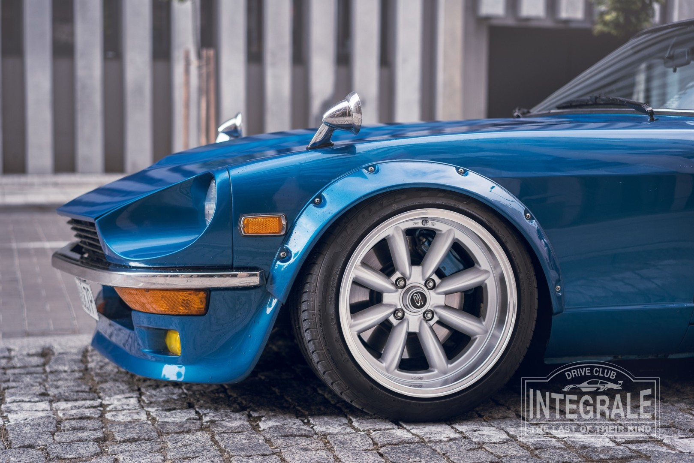
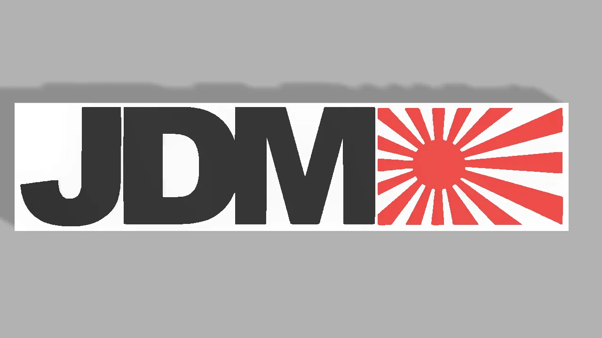

Cechy JDM'ów

Techniczne
Wiele samochodów produkcji japońskiej przewidzianych do sprzedaży poza terenem kraju różniło się od swych odpowiedników dostępnych w Japonii. Jedną z najważniejszych różnic są zmiany w budowie silnika, które ograniczają jego moc, lecz pozwalają stosować benzynę o niższej liczbie oktanowej, niedostępnej w Japonii. Silniki o identycznej pojemności skokowej przewidziane do użycia na terenie Japonii mają większą moc, lecz wymagają stosowania droższej benzyny wysokooktanowej, gdyż inaczej ryzykuje się jego uszkodzenie poprzez spalanie stukowe. Inne różnice dotyczą wyposażenia samochodu - często pojazdy JDM posiadają elementy, które w innych krajach były całkowicie niedostępne, bądź opcjonalne. Z tego powodu pojazdy przerabiane na styl JDM często są wyposażane w importowane z Japonii elementy, takie, jak sensory deszczu, elektryczne odświeżacze powietrza, fabryczne światła halogenowe czy automatyczna klimatyzacja.

Wizualne
Charakterystyczną cechą wizualną dla samochodów japońskich dla rynku rodzimego wytwarzanych od drugiej połowy XX do początku XXI wieku były lusterka boczne umieszczane na krawędziach przednich błotników. Argumentem za upowszechnieniem się tego rozwiązania było zapewnienie lepszej widoczności, którą szczególnie cenili japońscy taksówkarze korzystający z wyposażonych w takie rozwiązania samochodów jak np. Toyota Comfort. Pochlebne głosy obecne są także ze strony pasażerów taksówek, którzy dostrzegają w tym rozwiązaniu zapewnienie większej prywatności. Z lusterek montowanych na krawędziach błotników stał się znany także Nissan za pomocą modelu Skyline, który nosił je przez 20 lat do początku lat 80. XX wieku. Niezależnie od powyższego rozwiązania, pokrewną charakterystyczną cechą wizualną samochodów typu JDM jest także dodatkowe, trzecie lusterko umieszczone asymetrycznie wyłącznie na lewej krawędzi. Powszechnie stosowane wobec japońskich samochodów terenowych, SUV-ów i dużych vanów ma ułatwić manewrowanie.
Import
Choć samochody JDM zgodnie z terminem wyprodukowano specjalnie z myślą o rodzimym rynku, to cieszą się one masową popularnością na rynku wtórnym. Importem zajmują się zarówno osoby prywatne, jak i wyspecjalizowane w tym celu przedsiębiorstwa. Robią to nie tylko osoby poszukujące samochodu z powodu m.in. konkurencyjnej ceny czy oczekiwanej niezawodności związanej z relatywnie dobrą renomą japońskich producentów, ale i miłośnicy oraz kolekcjonerzy poszukujący rzadkich lub w ogóle nieoferowanych poza Japonią samochodów.

Kultura JDM
Samochody JDM lub japońskie samochody wyprodukowane na rynki zewnętrzne zyskały dużą popularność wśród entuzjastów tuningu i driftu, którzy upodobali sobie charakterystyczne modyfikacje samochodów pod kątem wizualnym i technicznym. Mają one niekiedy zadanie zwiększyć przydatność samochodu do ulicznych wyścigów, bądź do driftingu. Przeróbki te polegają między innymi na znacznym obniżeniu zawieszenia, montażu lżejszych felg, gdy zmiany w karoserii samochodu są delikatne, zazwyczaj montowane są elementy z włókna węglowego, które sukcesywnie obniżają masę samochodu. Ciekawostką są kierunkowskazy o pomarańczowych kloszach. Reszta zmian dotyczy silnika niejednokrotnie dostosowywanego do wysokich obrotów, oraz w większości przypadków, wyposażanego w turbosprężarkę. Powtarzający się styl modyfikacji, niekiedy spopularyzowany na fali filmów z serii Szybcy i wściekli, wytworzył specyficzną subkulturę właścicieli samochodów. Upodobali oni sobie charakterystyczne dwukolorowe naklejki w kształcie strzały, a także inne symbole nawiązujące do japońskiej popkultury.